用 AI Coding Agent 把「高性价比人生指南」首页从零复刻为干净代码，并逐像素比对验证还原度。下方为源站 / 克隆对照、像素 Diff 与 3× 放大证据。
同一视口下，左为源站截图，右为克隆产物截图。亮色 / 暗色 / 移动端 / 桌面折叠态全覆盖。
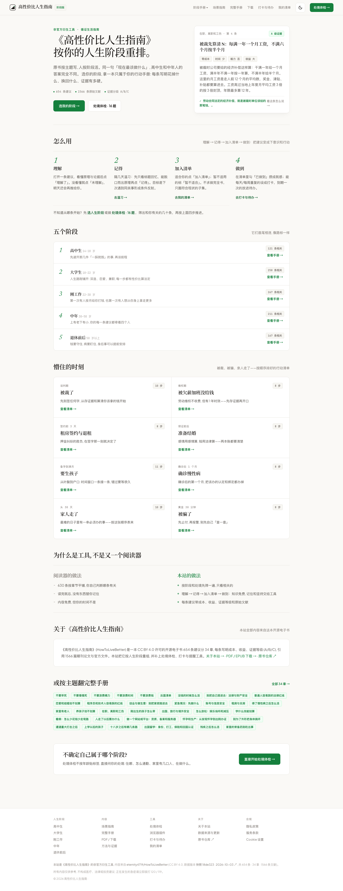
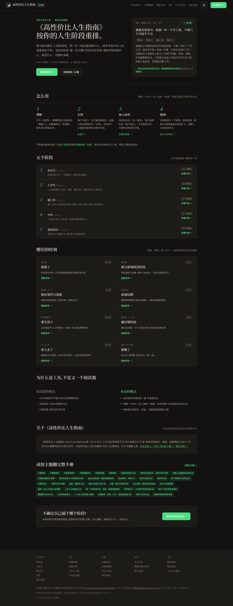
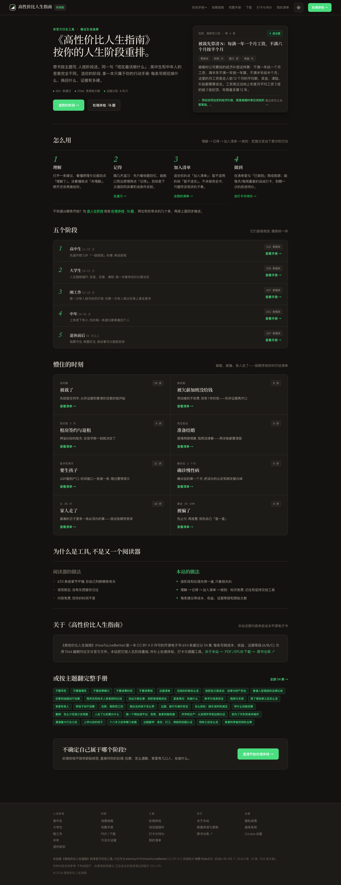
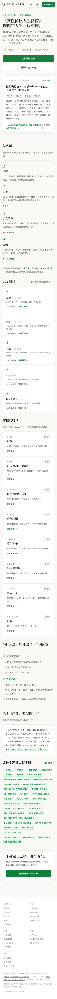
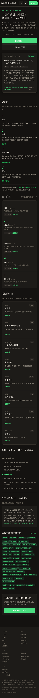
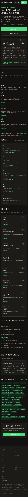
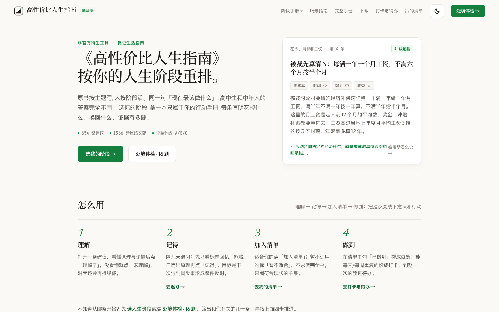
源站与克隆逐像素差值图：越暗表示差异越小。四张覆盖亮色 / 暗色 / 移动各态，整体近乎全黑即还原度极高。
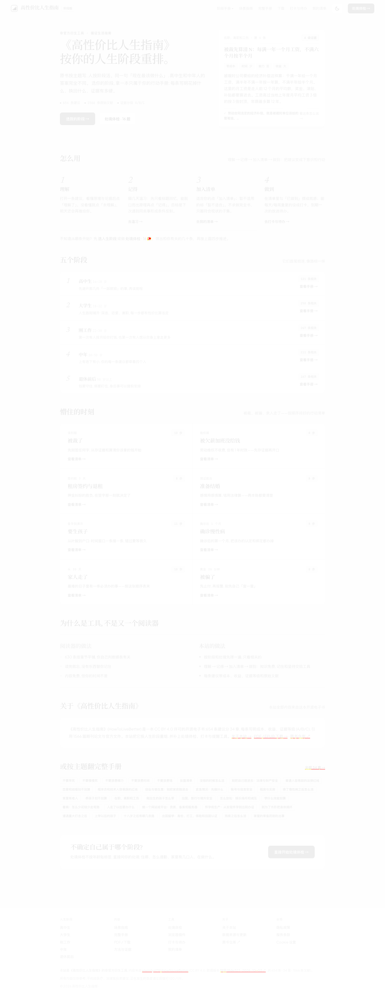
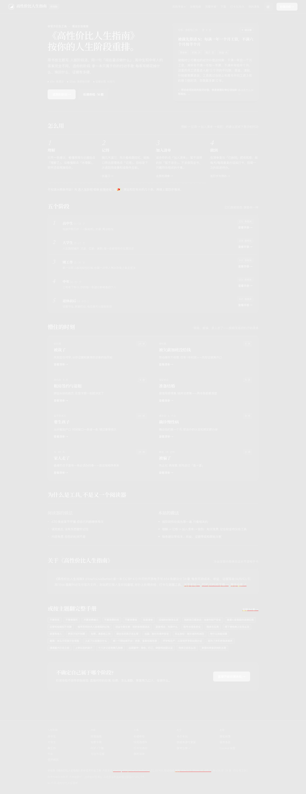
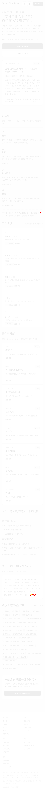
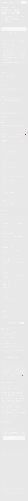
局部 3 倍放大，验证字体渲染、间距与 SVG 着色的逐像素一致性。左为源站，右为克隆。
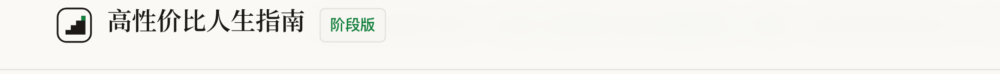
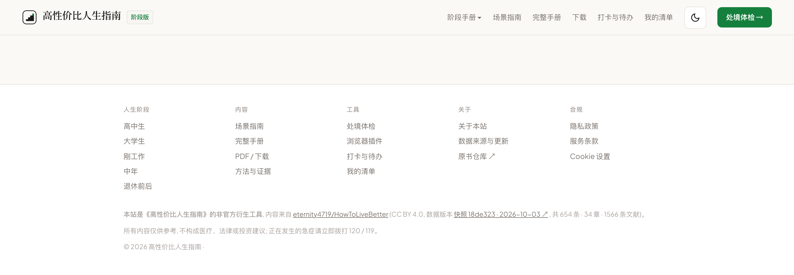
本页为非商业的技术复刻案例研究，用于展示 AI Coding Agent 的网站还原能力。克隆仅覆盖首页，站内其余链接（阶段页 / 手册 / 工具等）均保留指向 源站 how2livebetter.net 的同窗口跳转。
克隆不含源站的任何第三方追踪脚本（Google Analytics / AdSense / Consent Mode v2）；字体经 next/font 自托管，与源站同字体同字重，零外部字体请求。完整技术方案、设计 Token、区块测量与响应式断点见 《页面简报》。